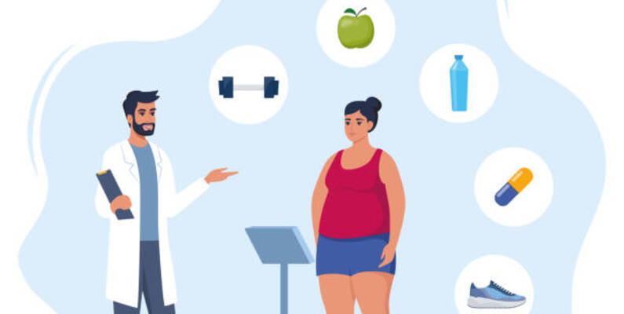
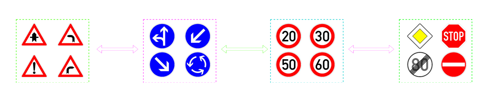
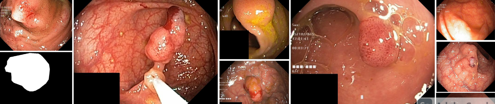

Hi, I am Diaa.
Welcome to my data science portfolio!


Hello! I'm a passionate and results-driven Data Scientist with a knack for transforming data into actionable insights.
With a strong foundation in machine learning, deep learning, and data analysis, I thrive on tackling complex problems and delivering innovative solutions.
My toolbox includes Python, SQL, Power BI, and various advanced modeling techniques.
Beyond the technical aspects, I enjoy collaborating with others to drive projects from concept to completion, always learning and adapting along the way. Welcome to my portfolio, where you can explore my work, projects, and journey in the world of data science!
Fluent
Fluent
Developed a chatbot that reads and answers questions about PDFs using FAISS for efficient retrieval. Built with Streamlit for an interactive experience.

Implemented an AI-powered facial recognition system using MTCNN for detection and FaceNet for feature extraction, achieving high accuracy.
Analyzed and classified obesity types using machine learning techniques, leveraging libraries such as TPOT and H2O for model optimization.
Performed sales analysis and customer segmentation using K-means clustering, uncovering key trends to enhance business strategy.

Developed a real-time traffic sign detection system using YOLO. Built an interactive Streamlit app to display detection results.
Designed a deep learning model for medical image segmentation to detect polyps in endoscopic images using U-Net architecture.
Built a sentiment analysis model to classify movie reviews as positive or negative using NLP techniques.
Acheived Gold rank with SQL on HackerRank.
Earned The title of Kaggle Master Ranking 502 out of 60,327 Talented Developers on Kaggle.